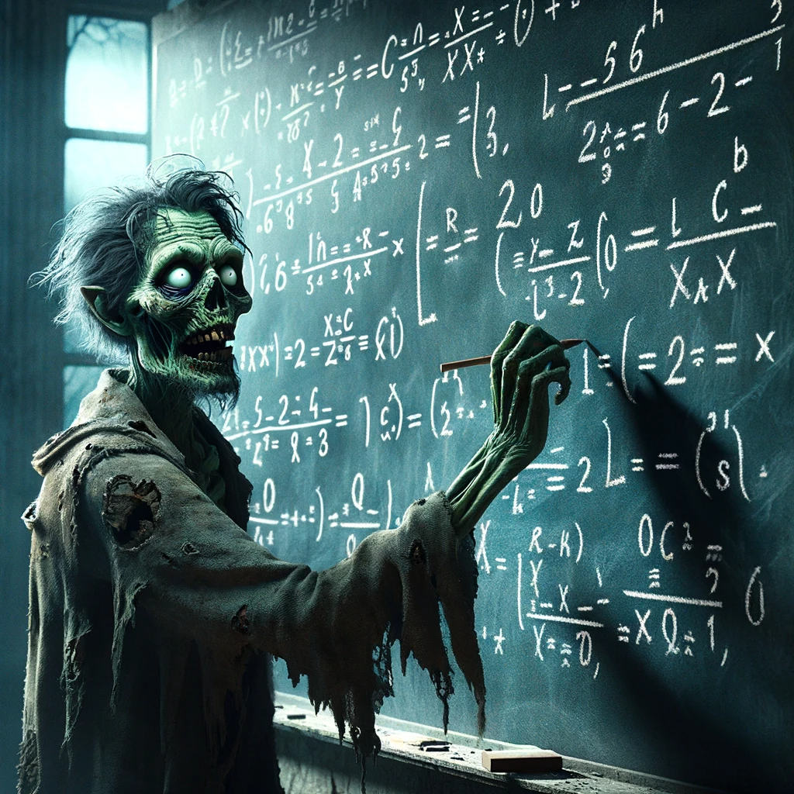

Zombie Lovers
Gizem Karaali
Professor Von Brain, a unique figure at Undying University, specializes in quantum loop gravity within the Department of Quantum Necromathematics. Transformed into a "Zombie Professor" under mysterious circumstances, he combines his expertise in quantum physics with supernatural phenomena. His groundbreaking work, particularly the development of the Necro-Quantum Equations, bridges the gap between science and the paranormal, earning him acclaim in both living and supernatural academic circles.
Kamden Baer
Professor Chad R.I.P., a pioneering half-zombie, half-AI scientist, leads the forefront of integrating advanced artificial intelligence with mathematical research. At the cutting edge of technology and the undead, he develops innovative AI algorithms that revolutionize the understanding and application of complex mathematics. His work, based at the intersection of the digital and the supernatural, is shaping the future of AI-driven mathematical discoveries, blurring the lines between the living, the undead, and the artificial.
Oscar Scholin

Oscar Scholin is a senior physics and math major at Pomona College. He is particularly interested in combining quantum physics and algorithms, particularly machine learning, both theoretically and in physical systems. He also enjoys Japanese fiction.